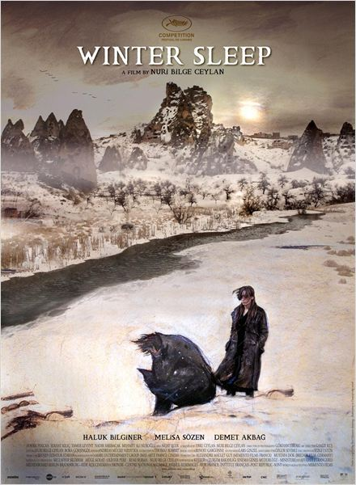

Winter Sleep
De gepensioneerde acteur Aydin runt een hotelletje in Centraal-Anatolië samen met zijn jonge vrouw Nihal, met wie hij een stormachtige relatie heeft, en zijn zus Necla, die nog steeds haar recente scheiding verwerkt
's Winters, bij het vallen van de eerste sneeuw, vormt het hotel hun schuilplek, maar evenzeer een onontkoombare plaats die hun onderlinge rancunes aanwakkert.